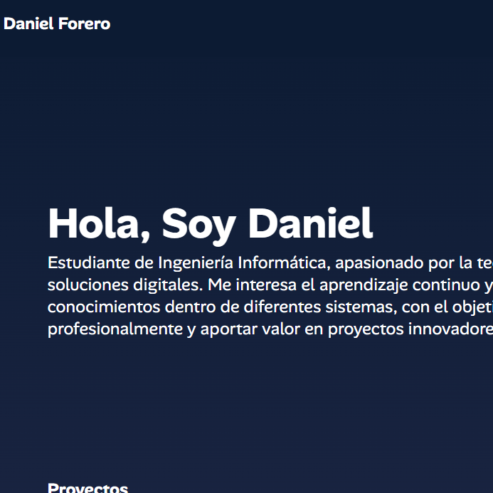

Proyectos

Batalla Naval
Juego interactivo que recrea la clásica batalla naval, implementado con lógica de programación y manejo de matrices.
GPS
Aplicación que simula un sistema de posicionamiento y rutas, enfocada en el uso de algoritmos de geolocalización.

Momentum
Herramienta para registrar y dar seguimiento a hábitos diarios, con enfoque en productividad y crecimiento personal.

Portafolio
Sitio web personal para mostrar mis proyectos, habilidades y trayectoria académica en Ingeniería Informática.
Biblioteca
Sistema de gestión de préstamos y organización de libros, orientado a la práctica de bases de datos y CRUD.

AlertUM
Aplicación diseñada para reportar y atender emergencias, optimizando la comunicación en situaciones críticas.